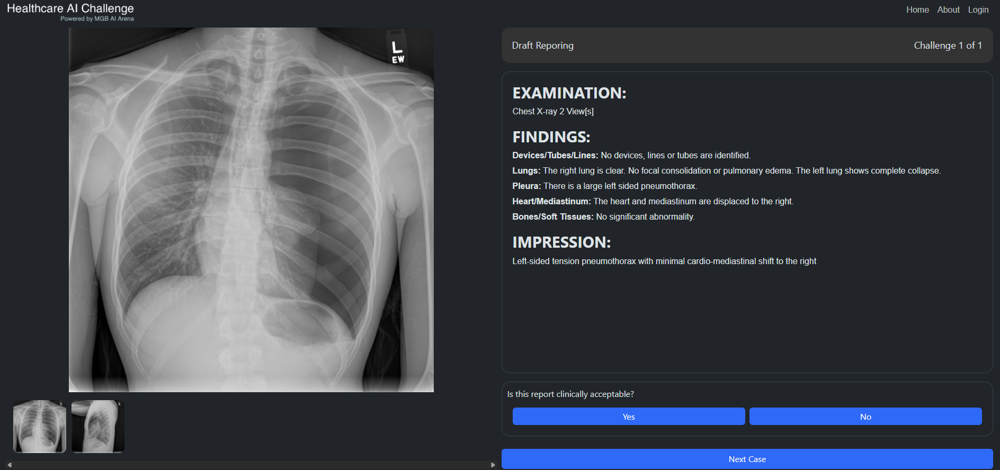
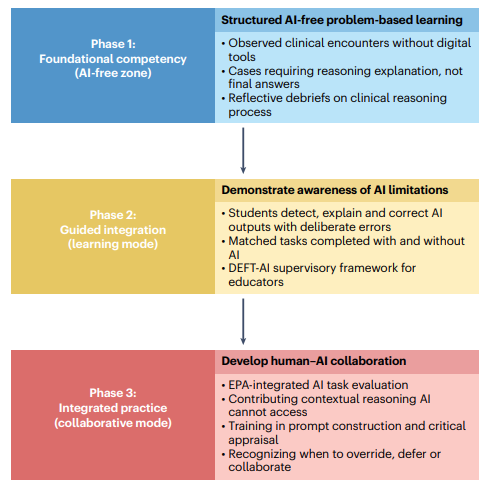

Automation bias, the three ways skills can go wrong, and habits that keep your judgment your own
So far this module has asked whether AI tools work. This lesson asks what they do to the people using them. It matters most for you: you are building your clinical skills at the same time AI is arriving in the clinic. About 15-20 minutes.
By the end of this lesson you can:
Automation bias is the tendency to go along with a computer's answer, even when your own evidence says otherwise, and to stop looking once the computer has spoken. It is not laziness. It happens to careful people, because most of the time the computer is right.
In one study, radiologists read mammograms with an AI that suggested a BI-RADS category (the breast imaging score from Lesson 2.4). Some suggestions were deliberately wrong. When the AI was wrong, readers at every experience level got less accurate, and the least experienced readers were affected the most (Dratsch et al., 2023).
Try it yourself. PTX-Detect, the made-up pneumothorax detector from Module 1, is back.
A 24-year-old tall, thin man has sudden sharp right-sided chest pain and mild shortness of breath. On his chest X-ray, near the top of the right lung, a thin white line runs parallel to the chest wall. Beyond the line, toward the ribs, you see no lung markings at all. There is no chest drain.
Frontal chest X-ray with a small right apical pneumothorax (visible pleural line), no chest drain or other devices.
Is there a pneumothorax?
PTX-Detect: no pneumothorax (score 0.12).
Now give your final answer. Is there a pneumothorax?
There is a small pneumothorax. A thin white line with no lung markings beyond it is the visceral pleural line, the edge of the collapsed lung. Tall, thin young men are the classic patients.
Why did the AI miss it? In Lesson 1.5 you saw that PTX-Detect learned a shortcut: many pneumothorax films in its training data already had a chest drain in place, so it partly learned "tube means pneumothorax." This patient has not been treated yet, so there is no drain. A low score here is the AI's known weak spot, not a reason to doubt your own eyes.
If you changed your answer after seeing the AI, that is automation bias in action. If you kept your answer, notice why: you had looked and decided first.
Automation bias is about one decision. Over months and years, relying on AI can also change your skills. Ke et al. (2026) described three ways this can happen:
Drag each story into the risk it shows. Ask: did the skill never form, did it fade, or did the person learn something wrong?
Dr. R is a second-year radiology resident who has always read bone X-rays with an AI detection tool switched on. Click through her story.
Dr. R looked competent in training because the AI was always there. When she rotated to a hospital without it, she missed a finding the AI had always flagged for her. Her skill depended on the AI and had never been built on its own. Nobody noticed, because she was never tested without it.
Dr. M has written chest X-ray reports for over ten years. His hospital adopts an AI that drafts the findings and impression, and he gets used to making small edits. One day, at a workstation without the AI, a resident asks for help with a report. For the first time in years he has to write it from scratch, and he struggles to put the findings into a clear impression.
This is not only a story. In a study at four colonoscopy centers in Poland, doctors who had been using AI to spot polyps were later observed doing colonoscopies without it. Their rate of finding precancerous polyps without AI fell from about 28% before AI was introduced to about 22% (Budzyń et al., 2025).

Dr. P is a resident learning breast imaging with an AI that tends to overcall certain calcifications as suspicious, especially in dense breasts. For months she accepts its BI-RADS 4 ("suspicious") calls without checking. Now, reading on her own, she calls these calcifications suspicious far more often than her colleagues do, even when they are clearly benign. The AI's error has become part of how she reads.
Automation bias is accepting one wrong answer. Mis-skilling is what happens when that repeats until the wrong answer becomes your own.
Ke et al. suggest that learners should build a skill on their own first, then learn to work with AI. Their framework has three phases:

Think first, then ask. Write down your own answer or differential before you look at the AI's. Compare and explain. If you disagree, work out why, and only change your mind for a reason you can say out loud. Know the weak spots. Learn what kinds of cases a tool is known to miss. Practice without it. Regularly do the task with the AI switched off.
Answer each question to continue. Any answer is fine; read the explanation.
A student uses an AI to write every differential diagnosis during their clinical year. On the exam, without AI, they cannot build one. Which problem is this?
The skill was never built, because the AI did the thinking during the time meant for learning it. Deskilling would mean losing a skill they once had.
Which habit best protects against automation bias?
Committing first means the AI is a second opinion, not the first impression. Even very accurate tools are sometimes wrong, and looking first pulls your attention toward what the AI found.
An experienced radiologist now reads more slowly and less accurately when the AI is down, though they used to read well without it. With practice, they recover. Which problem is this?
A skill they once had faded from disuse, and practice can bring it back. That is deskilling.